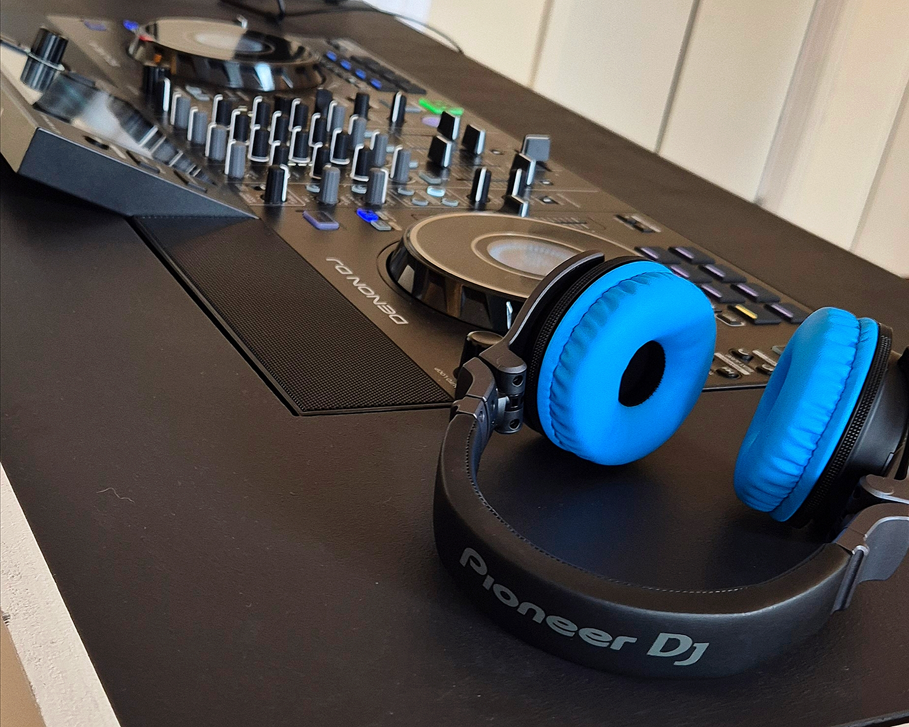
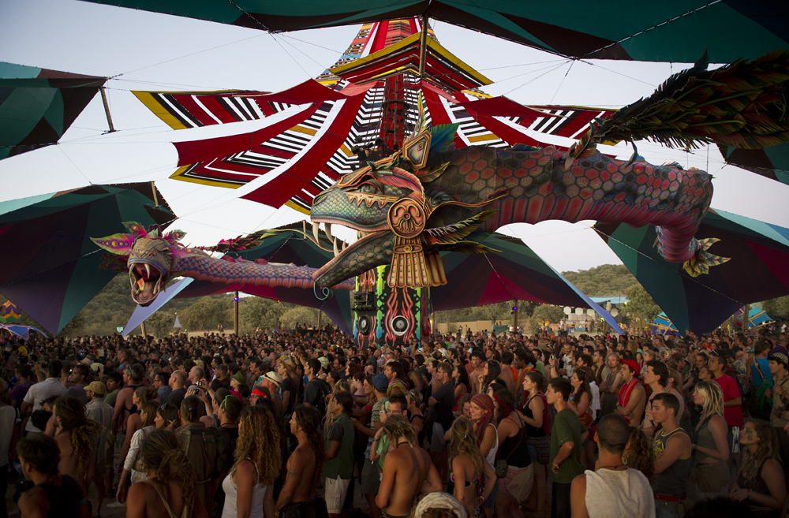
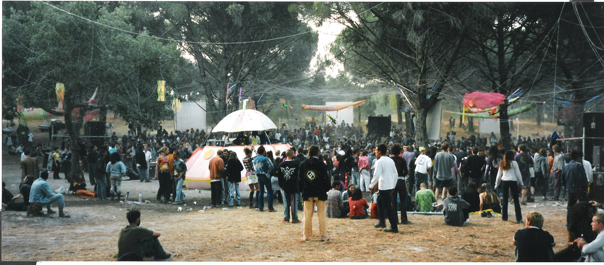

Psyclub
Fortaleza · 22:00
Música eletrônica e psytrance direto de Fortaleza. Dá o play no set On the New Era e leva o Rony L pra sua pista.
Role
Rony L é o projeto de DJ de Ronielly Santiago, de Fortaleza. Nas pistas da cena eletrônica cearense, do psytrance às festas ao ar livre, ele monta sets pra quem gosta de dançar até o fim.
Fora da cabine, está no comando do Shakenado, bar e alimentação para eventos, e é parceiro do Chegue Bar. Ou seja: entende de festa dos dois lados do balcão.
Além da música, o Rony comanda o Shakenado: bar e alimentação para festas e eventos em geral. Drinks, comida e estrutura pra sua festa não parar.
Conhecer o Shakenado

Para datas e cachê, fale com a PROD Oficial. Para o bar do seu evento, chame o Shakenado.
Siga o Rony
Fotos de referência: mixer, PattayaPatrol, CC BY-SA 4.0; fone no mixer, Djmichank, CC BY-SA 4.0; Dance Temple, Serialslb, CC BY-SA 3.0; festa ao ar livre, Racheland Deckard, CC BY-SA 4.0; drinks, Shixart1985, CC BY 2.0; bar de evento, Green Jar Ibiza, CC BY-SA 4.0. Via Wikimedia Commons.